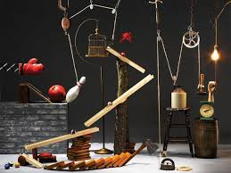
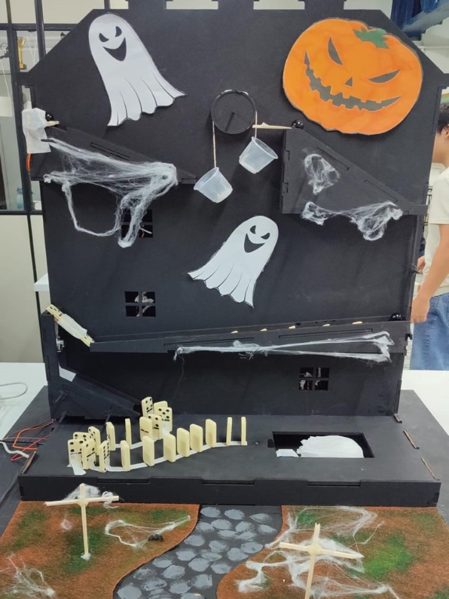
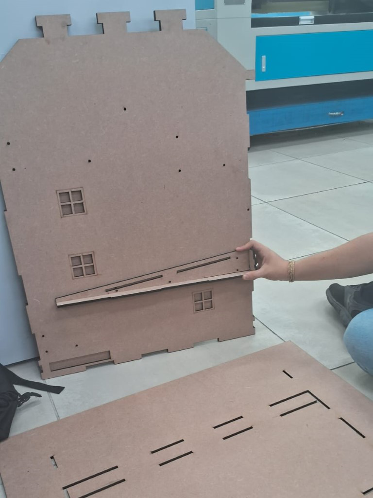
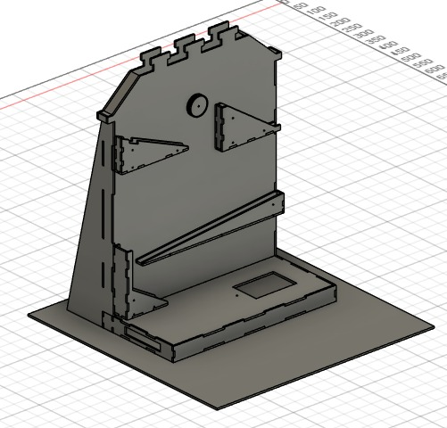

O Rá-tim-bum é uma interpretação moderna e eletrônica de uma máquina de Rube Goldberg. Esse tipo de máquina é projetado para realizar uma tarefa simples por meio de uma série de interações complexas e criativas. É um símbolo de inovação e criatividade, onde cada peça e movimento é cuidadosamente pensado para produzir um efeito em cadeia.
O diferencial do Rá-tim-bum é o uso de componentes eletrônicos, como sensores e motores, que trazem um nível adicional de interatividade e precisão. Criado para demonstrar uma mistura de mecânica e tecnologia, ele representa a dedicação da nossa equipe ao buscar soluções inovadoras.
Desenvolvido ao longo de 30 dias pela equipe da Ômega Tech, o nosso Rá-tim-bum é composto de materiais como MDF, servos motores, LEDs, sensores LDR e ultrassônicos, e um sistema de contrapeso que dá vida a essa máquina impressionante. Cada detalhe foi cuidadosamente planejado e construído para criar uma experiência visual e técnica que encanta e educa.
 O projeto foi apresentado no dia 31 de outubro na Universidade Santa Cecília, após uma preparação intensa que começou no dia 1 de outubro. Essa jornada representa a união dos nossos conhecimentos em engenharia e tecnologia para criar eventos complexos e milimetricamente calculados, trazendo um efeito verdadeiramente único.